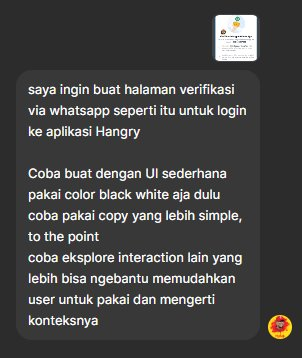
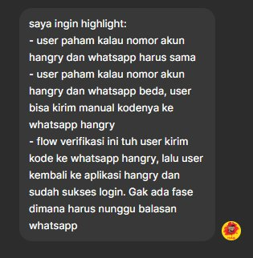
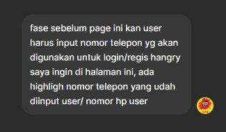
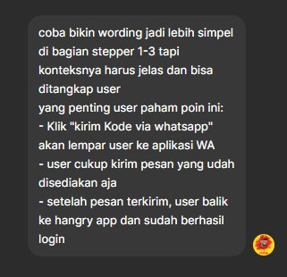
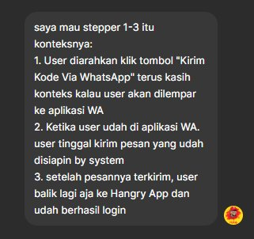
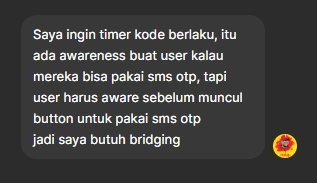
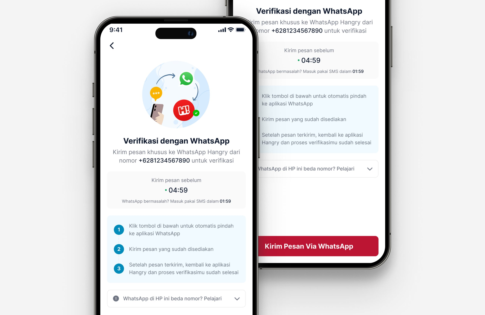

WhatsApp Login: Using AI in Design for the First Time
This case study is about a login method. But it's really about how AI changed my iteration process and what I learned getting there.
The Problem
Login complaints from users kept coming in to the CE team, OTP codes weren't arriving reliably. The app already had a PIN option, but most users skipped setup entirely. OTP became the default login method. When it failed, users were locked out.
The problem was two-sided: OTP was unreliable and expensive on the business side, every SMS trigger had a real cost. After benchmarking apps that had already moved away from OTP, WhatsApp-based login emerged as a viable alternative: lower cost, higher reliability, and universal penetration in Indonesia.
The flow itself is simple. User inputs phone number → taps button → redirected to WhatsApp → message is pre-filled, user just taps send → returns to app → already logged in. No code, no waiting, no PIN.
How I Used to Work
Before this project, my prototyping process was entirely manual. For a new flow like WA Login, I'd need to build the interfaces from scratch in Figma first. Every screen, every state, then connect them together into a working prototype. Then test. Then revise. Then rebuild.
That difference 1 to 2 days down to a few hours, meant I could test earlier, fail faster, and get to the right answer sooner. And that "few hours" included time spent learning the tool from scratch.
Using AI for the First Time
I decided to use FigMake: Figma's AI feature, for this project. The idea was to skip the manual interface-building step and go from wireframe to testable prototype much faster.
What I didn't expect was how much the quality of the output depended on the quality of my prompt. My early prompts were vague. I described what I wanted to build without enough context, no mention of the specific user confusion I was trying to address, no detail about the edge cases, no clarity on the exact mental model I was designing for.
Here's what those early prompts looked like:






The outputs from these prompts were far from what I had imagined. As I learned to add more specific context, the user journey, the exact confusion I'd observed in testing, the precise copy I wanted, the results got progressively closer.
The insight that changed how I prompted:
A vague prompt is a vague brief. If I couldn't explain what I was building precisely enough for AI to understand it, I probably hadn't thought it through precisely enough myself. The prompting process forced me to be clearer about my own design intent.
Testing and Finding the Real Problem
With the first prototype ready, I tested it with colleagues outside the tech team, the same kind of users who'd be using the real feature.
A consistent pattern emerged: they'd send the WhatsApp message, then wait. They expected a reply from Hangry's admin number before they could log in. But there is no reply. The moment the message is sent, verification is already complete in the background. They just needed to go back to the app.
This was the real design problem, not the flow itself, but the gap between how users expected it to work and how it actually worked. That gap had to be closed through copy and instruction design.
Iteration and the Fix
I went back to FigMake with a much more specific prompt this time, including the exact mental model issue I'd uncovered and the specific copy I wanted to test. The new prototype came together in the same session.
The solution: a three-step instruction block with action-oriented copy that left no room for the wrong interpretation.
- 1 Tap the button below, you'll be taken to WhatsApp automatically
- 2 Send the message that's already been prepared for you
- 3 Once the message is sent, return to Hangry App, verification is already complete
Step 3 is where the work is. "Once the message is sent" — not "after you receive a reply." One phrase. But it cuts off the wrong expectation before it can form.
I tested the new prototype with the same colleagues. This time, they went through the flow without hesitation. They knew exactly what to do.
FigMake prototype — final version used for user testing

The final design — live in Hangry App
Outcome
After WA Login launched, login-related complaints to the CE team dropped significantly. The feature is still live in Hangry App today. From both a user and business perspective, it works and the cost per verification is a fraction of what SMS OTP was costing.
What This Taught Me
"The bottleneck in AI-assisted design isn't the tool. It's the clarity of your own thinking."
The more specific my prompts became, the better the outputs. But what I was really doing was forcing myself to think more clearly about what I was designing and why. AI didn't replace that thinking, it exposed where it was missing.
And on the design side: a new behavior doesn't just need to work correctly. It needs to be explained precisely. Users arrive with mental models from previous experiences. One phrase in the right place can be the difference between a flow that confuses and a flow that clicks.
This project was the starting point. Since then, AI has become a regular part of how I work as a designer. For research, ideation, and prototyping. Even this portfolio website was built with the help of Claude.